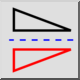

Vertikalus apvertimas
Įrankių juosta / piktograma:


Meniu: Keisti > Vertikalus apvertimas
Trumpasis adresas: F, V
Komandos: flipvertically | fv
Įrankių juosta / piktograma:


Ši funkcija apverčia (atspindi) dabartinį pasirinkimą vertikaliai.